Africa Already Won the Stablecoin Race. Nobody Told the VCs.
Africa has the world's highest stablecoin adoption rate at 9.3%. This isn't a crypto story. It's a broken plumbing story — and the real moat isn't the coin.
Read Analysis →Operator-level analysis on platform economics, infrastructure strategy, and emerging markets
Africa has the world's highest stablecoin adoption rate at 9.3%. This isn't a crypto story. It's a broken plumbing story — and the real moat isn't the coin.
Read Analysis →MTN's $6.2 billion acquisition of IHS Towers isn't a telco consolidation play. It's an infrastructure sovereignty move — and it changes the unit economics of African market entry overnight.
Read Analysis →Airtel Africa is no longer chasing new countries. They're becoming an infrastructure company that happens to have a mobile network.
Read Analysis →How Jumia's "Shrink-to-Grow" pivot and the rise of Pickup Stations are redrawing the map of African commerce.
Read Analysis →Why Value-Added Services were misunderstood for a decade, and what broke the investment-delegation model.
Read Analysis →Africa has the world's highest stablecoin adoption rate. This isn't a crypto story. It's a broken plumbing story — and the real moat isn't the coin.
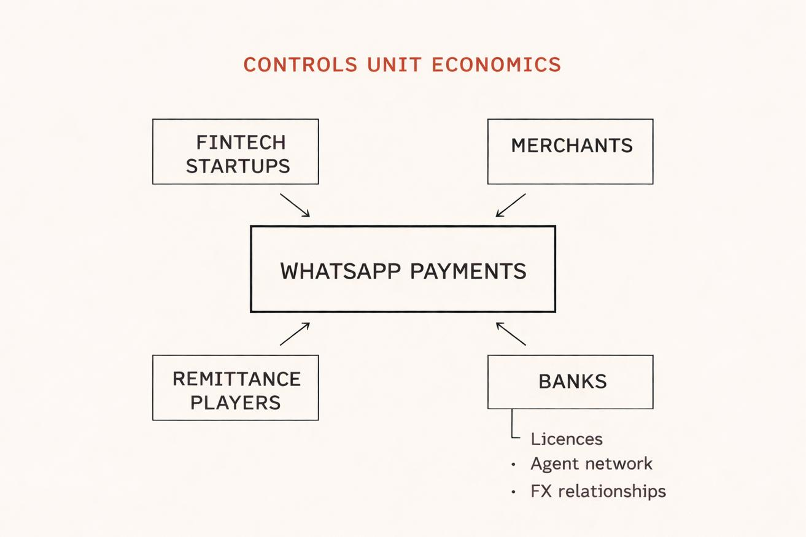
A colleague sent me an article about stablecoin adoption in Africa last week. My first reaction was honest: I skimmed it, filed it under "crypto noise," and moved on. Two days later I couldn't stop thinking about one number. I went back, read everything I could find, and realised I had been looking at the wrong layer entirely. What follows is what I found — seen through 12 years of operating in the markets everyone else is theorising about.
I've spent 12 years operating in markets where the most common sound in commerce isn't a "cha-ching." It's the silence after a failed payment.
In the West, stablecoins are debated as a libertarian ideal or a speculative hedge. On the ground in Lagos, Nairobi, and Luanda, nobody cares about the ideology. They care that the USD-denominated invoice needs to be paid and the local bank just said "no."
Before we go further — a quick definition for those less familiar with the space. A stablecoin is simply a digital currency pegged to the US dollar. Think of it as a dollar that lives on the internet, moves instantly, and doesn't need a bank to work. I say this because when I first encountered this topic, I made the mistake of treating it as a crypto story. It isn't. Once I understood what stablecoins actually do — not what they represent ideologically — everything clicked.
Between July 2024 and June 2025, Sub-Saharan Africa recorded over $205 billion in on-chain value — a 52% year-on-year growth rate, making it the third-fastest growing crypto market globally. But here is the number I couldn't stop thinking about: Africa has a 9.3% stablecoin adoption rate — the highest in the world.
This isn't a "crypto" story. This is a "broken plumbing" story. Africa didn't choose stablecoins. It was forced into them because the traditional rails stopped working.
The first thing I had to unlearn when I went back to research this properly was the Western framing. Every major publication was writing about stablecoins as a product looking for a market — a Silicon Valley solution in search of a problem. In Africa, the problem arrived first.
Most VC theses on African fintech treat cross-border payments as a friction problem — something to be smoothed out with better UX or faster APIs. What they miss is that this is a structural problem. The unit economics of cross-border trade in Africa are crippled by what I call a "liquidity tax" — multiple currency conversions, correspondent banking delays, and dollar scarcity that collectively eat 10 to 15% of every transaction.
To put that in plain terms: if you are a Cameroonian importer paying a Ghanaian supplier, up to 15 cents of every dollar you send evaporates before it arrives. That's not a fee. That's a structural tax on doing business across borders.
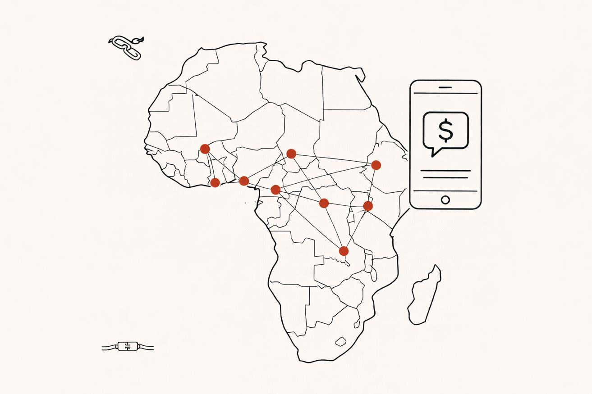
Stablecoins — primarily USDT and USDC — have become the shadow infrastructure of African cross-border trade. Merchants use them because they are faster than SWIFT, more reliable than a local wire, and available at midnight when the bank is closed. As a growth operator, I see this not as speculation but as CAPEX-free infrastructure. The market built its own rail while the incumbents were still trying to fix the old one.
I watched this happen in real time. Products I worked on in Francophone West Africa were losing distribution partners not because of weak demand, but because cross-border settlement was too slow and too expensive. At the time, I diagnosed it as a logistics problem. Looking back now, it was always a payments infrastructure problem. Stablecoins didn't disrupt those markets. They rescued them — and I was too focused on the product layer to see the plumbing underneath. That blind spot is exactly what I'm writing about.
This is where my operator background started to override the research — and where I started seeing something the standard fintech commentary was missing entirely.
The real platform economics in African stablecoin markets don't live in the token. They live in the last-mile conversion infrastructure. The companies that win aren't the ones with the best wallet or the slickest app. They are the ones who own the regulatory and technical plumbing to turn a stablecoin back into local fiat — Naira, Shillings, CFA Francs — reliably, cheaply, and at scale.
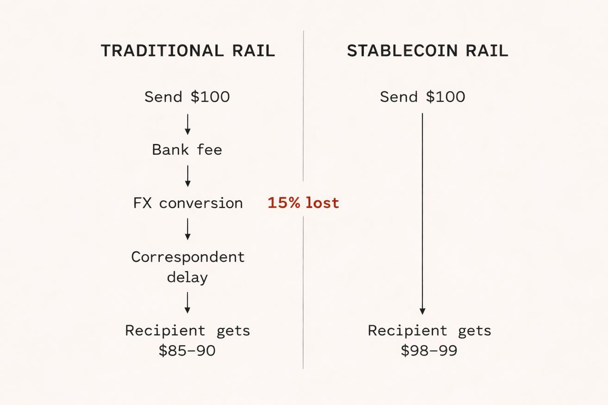
This is where companies like Yellow Card and Chipper Cash are building genuine moats. Yellow Card alone processes over 60% of the continent's stablecoin volume. That's not a product advantage. That's a distribution infrastructure advantage — the same kind of moat that makes last-mile logistics so hard to replicate in e-commerce, as I explored in my analysis of Jumia's PUDO network and last-mile logistics strategy.
Here is the due diligence question I would ask any fintech operating in this space: what is your off-ramp cost per transaction in your three highest-volume corridors? If the answer isn't a specific number — that is your risk.
If you can't convert a digital asset into "school fee money" or "diesel money" at a local agent by Friday afternoon, the rail is useless. The off-ramp is the new gateway. And right now, very few companies own it.
Meta — the company behind WhatsApp, Facebook, and Instagram — is quietly testing the ability to send and receive money using stablecoins directly inside WhatsApp. No bank account required. No currency conversion fee. Just a message and a payment in the same thread.
Most Western commentary is framing this as Meta's attempt to re-enter the crypto space after the collapse of its Libra project in 2022. That framing completely misses the African context.
In West Africa, WhatsApp isn't a messaging app. It is the internet. It is where business happens, where invoices are sent, where trust is built, and where commerce is negotiated at every level from street vendor to regional distributor. I have sat in rooms where a $200,000 purchase order was agreed over a WhatsApp voice note. The infrastructure was already there. Meta is simply about to monetise it.
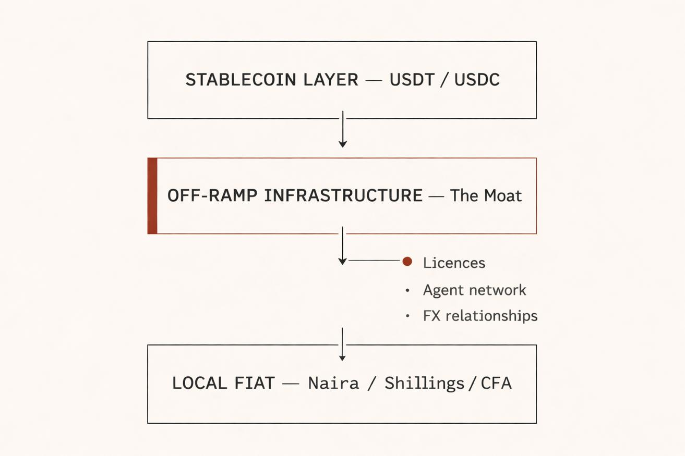
If Meta embeds stablecoin rails directly into WhatsApp payments, it doesn't compete with African fintech. It becomes the distribution layer that controls everyone's unit economics overnight. Every fintech startup's customer acquisition cost and transaction margin becomes a variable set in Menlo Park.
I've seen this movie before. It's the same structural move that telcos made when they controlled the SMS billing layer for Value-Added Services in the early 2010s. The infrastructure owner eventually sets the terms for everyone building on top of it — which is precisely what broke the investment-delegation model that defined African telco VAS for a decade. The pattern repeats. The sector changes. The lesson doesn't.
The question for every African fintech VC right now is not "will Meta enter payments?" It already has. The question is: does your portfolio company's unit economics survive if WhatsApp takes 2% of every transaction they process?
VC decks love to talk about Total Addressable Market. But after 12 years scaling digital products in these markets, I've learned that TAM is a vanity metric if your last-mile friction is too high.
I came into this topic a sceptic. I'm leaving it as a convert — but not for the reasons you'd expect. Not because stablecoins are revolutionary technology. But because the markets I know best have already made the decision for us. The adoption is real, the infrastructure is being built, and the moats are forming right now in places most investors aren't looking.
The real opportunity in 2026 isn't launching another token. It's regulatory arbitrage and liquidity provision — being the company with the local licences, the local banking relationships, and the local agent network in markets where dollar scarcity is most acute. That combination is harder to build than any algorithm. And it's harder to replicate.
While Lagos, Nairobi, Accra, and Cairo are crowded, the markets with the highest currency pressure — and therefore the fastest stablecoin adoption — are places like Kinshasa, Dar es Salaam, Douala, and Lome. These aren't frontier markets. They're under-served markets. There is a difference. And that difference is where the unit economics still favour the early mover.
The operators who win in 2026 won't have the best token. They'll understand the plumbing — conversion infrastructure, regulatory positioning, and who controls the last mile.
MTN's $6.2 billion acquisition of IHS Towers isn't a telco consolidation play. It's an infrastructure sovereignty move — and it changes the unit economics of African market entry overnight.
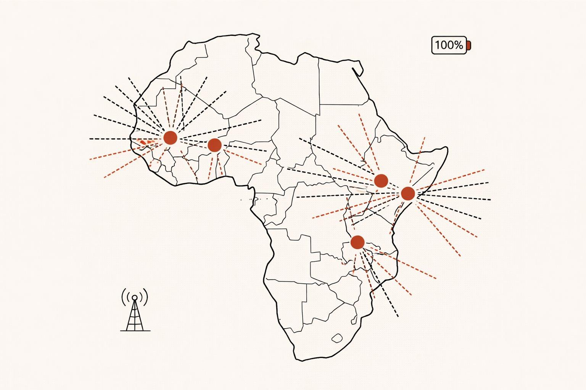
I had a CMO once who refused to say good morning. Not out of rudeness — out of discipline. Every single day, his opening line was the same: "How much revenue did your products make yesterday?" No coffee. No pleasantries. Just the number.
After months of that ritual, something shifted. I stopped being a product person and started being a growth operator. I stopped managing roadmaps and started owning P&Ls.
On February 17, 2026, MTN Group announced it would acquire 100% of IHS Towers in a transaction valuing the company at $6.2 billion. They looked at 29,000 towers they were leasing — sites where they already provided 62% of the revenue — and asked: "Why are we paying someone else's margin on our own infrastructure?"
Almost everyone is calling this a telco consolidation play. A debt restructuring. A cost-cutting move. They are looking at the wrong board.
For ten years, the TowerCo model — IHS, Helios, American Tower — was built on a single premise: neutrality. Independent towers created a digital commons. Any operator could colocate. A fintech with an MVNO licence could access the same infrastructure as MTN. A new market entrant in Nigeria could reach the same site density as an operator with 30 years of presence. The playing field was, structurally, level.
MTN just ended it.
By bringing 29,000 towers in-house, they have Balkanised the infrastructure. Every competitor currently colocating on those sites — whether a rival operator or the next ambitious fintech — is now structurally paying rent to their biggest rival.
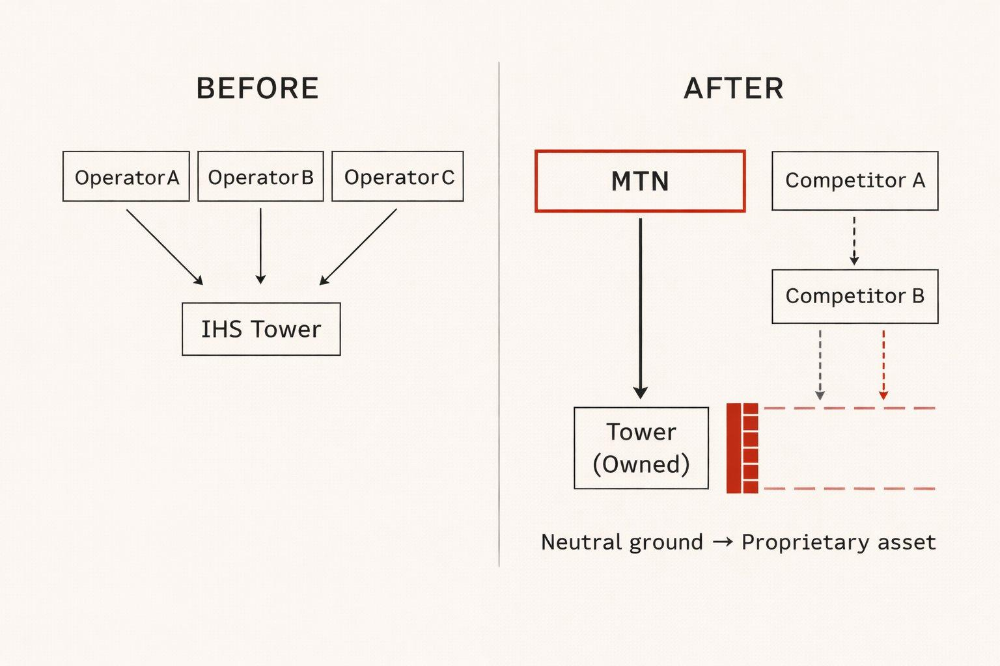
IHS's own financial structure reflected this dependency — $3.27 billion in borrowings, 85% in foreign currency, with one client representing the majority of its revenue. The neutrality was always fragile. MTN just made it official. If your Africa market entry model assumes commoditised infrastructure access, that assumption expired on February 17, 2026.
The standard take on tower ownership is about steel — physical assets, depreciation schedules, lease yields. That framing made sense in a 4G world. 5G physics are different. Millimetre-wave signals travel shorter distances and degrade through obstacles. Network quality is no longer determined by software or antenna upgrades — it is determined by physical site density. You cannot engineer around it.
This is what MTN actually bought: control over the 5G quality ceiling in five markets simultaneously. An owner decides what equipment goes on a site, when it gets upgraded, and who else gets to colocate — and at what price. In the coming battle for high-margin enterprise 5G contracts, the operator who controls site density sets the rules for every other player in the market. The moat isn't the steel. It's what the steel determines.
Here is the question that should be making energy investors uncomfortable. Tower sites already possess what I call the Holy Trinity of African infrastructure: land rights, community presence, and a built-in power connection. These are the three things that take energy startups years and millions to secure — and most never fully do.
MTN just acquired 29,000 of them overnight.
The arbitrage logic is straightforward: own the solar panels and batteries at 29,000 sites, charge them cheaply off-peak, run high-margin data services on stored power when the national grid fails. In markets where grid reliability is a competitive variable — not a background condition — whoever controls the batteries controls the most valuable infrastructure position available.
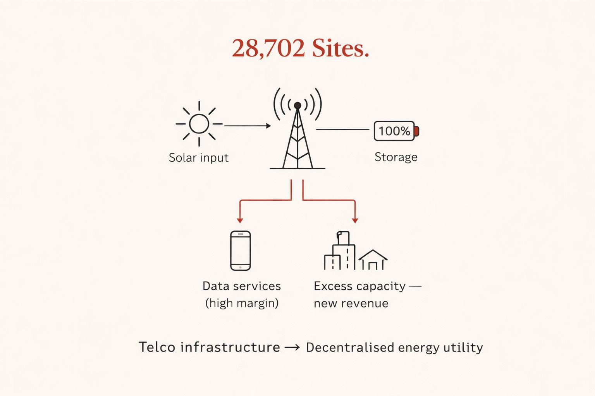
If you are running due diligence on an energy startup in West or East Africa right now, ask one question: does their moat depend on building physical infrastructure from scratch — in markets where MTN just acquired 29,000 anchor points in a single transaction? If yes — your investment memo has a problem.
After 12 years scaling digital products across Africa, I've seen the same pattern repeat: a pitch deck treats infrastructure as a given. An operator finds it is a variable — and usually the most expensive one. The MTN/IHS deal makes that variable explicit for the first time at continental scale.
This is not an isolated move. It follows the same depth-over-breadth logic I analysed in Airtel's infrastructure pivot away from geographic expansion — operators across the continent are choosing to own the plumbing rather than rent it. The era of asset-light market entry in African telecoms is closing.
While everyone is focused on Nigeria and the Big Four markets, the asymmetric opportunity sits in the places the board hasn't been captured yet — Benin, Zambia, Madagascar, the DRC. Tier 2 markets where unit economics still favour the early mover, where infrastructure neutrality still exists, and where the cost of market entry is still proportionate to the reward. The operators who win in 2026 won't have the best app. They'll understand the plumbing — power, density, and who controls both.
Airtel Africa is no longer chasing new countries. They're becoming an infrastructure company that happens to have a mobile network.
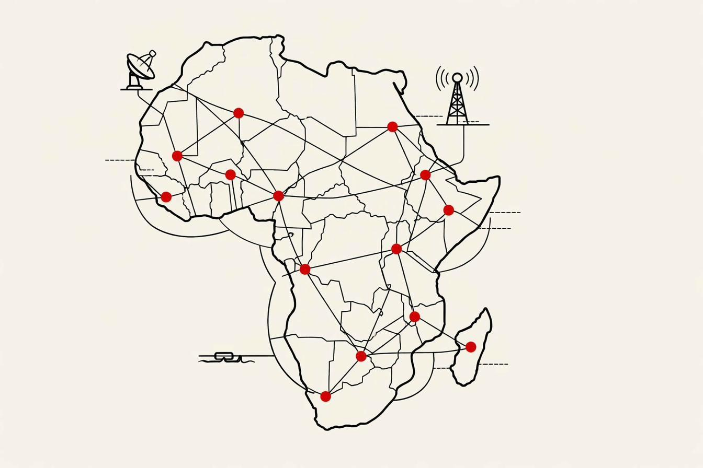
I've been watching the headlines about Airtel Africa's recent restructuring, and it feels like a full-circle moment. For years, the narrative in the "Real Economy" was about the land grab—adding countries, chasing subscriber counts, and showing a map covered in red.
But Airtel just flipped the script. They aren't chasing new flags anymore. They're becoming an infrastructure company that happens to have a mobile network.
Most people see "Data Centers" or "Fiber Networks" as boring back-end costs. But as a Growth Operator, I see them as the ultimate Platform Economics play. By spinning off Nxtra and Telesonic, Airtel is moving from the volatile world of B2C "prepaid" users to the stable, high-margin world of B2B infrastructure.
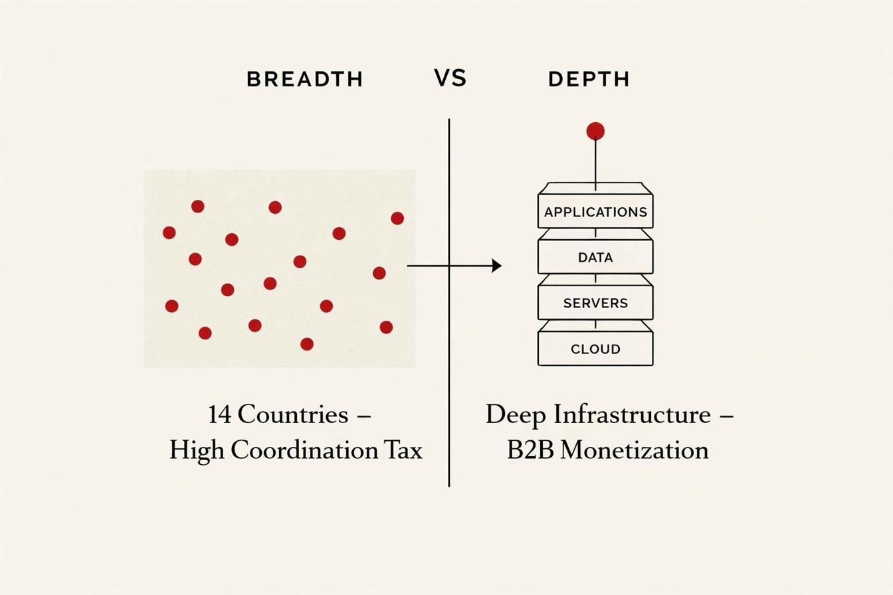
The Lesson for Scale-ups: Stop obsessing over your total user count if your "plumbing" is leaky. If you've built a tool to manage your logistics or data that is better than the product you're selling—that might be your real business.
Airtel's partnership with Starlink is the ultimate Market Entry "hack". Instead of the grueling process of burying fiber in remote regions, they are "renting" the sky. It's a reminder that being an Operator isn't about owning every part of the chain; it's about orchestrating the most efficient one.
We are entering the era of Unit Economics Validation. The "Coordination Tax" of managing 14 different regulatory environments is too high if you aren't monetizing the core infrastructure. Airtel is choosing depth over breadth. In 2026, the winners in the African tech space won't be the ones with the biggest map, but the ones with the most "indispensable" pipes.
For a decade, Jumia was the poster child for "Burning Cash in Africa." As we hit early 2026, the data tells a different story.
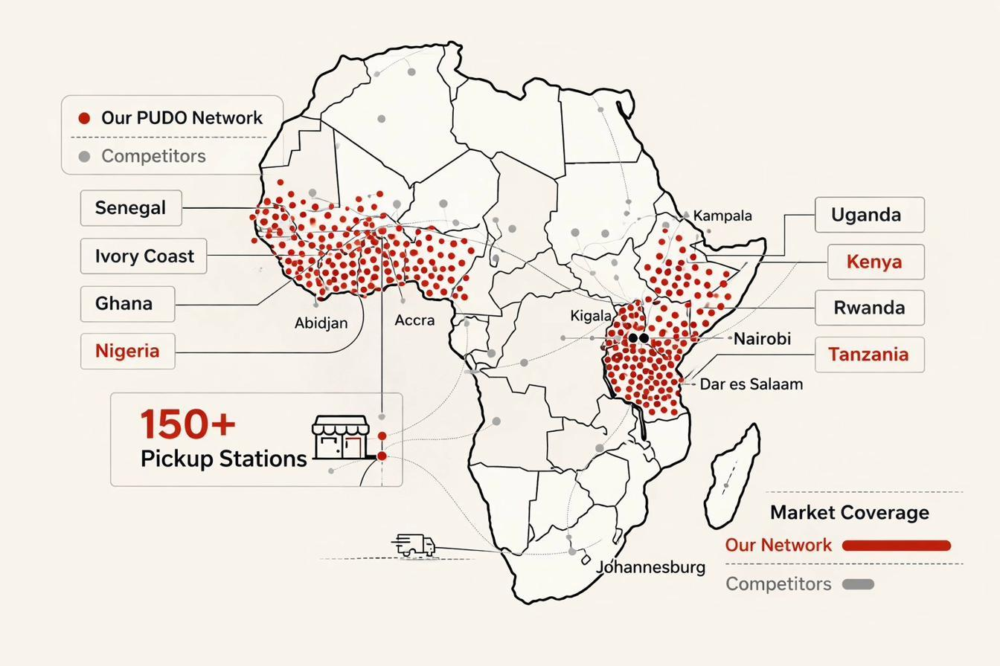
Between 2012 and 2022, the narrative was a cycle of high-level management in Dubai, massive marketing spends, and unsustainable "Last Mile" logistics costs. But under CEO Francis Dufay, Jumia executed a "Shrink-to-Grow" strategy that many VCs once thought impossible for a pan-African giant.
The 2026 Performance Benchmarks. The results of this "Hard Ops" pivot are visible in Q3 2025 and Q1 2026 metrics: fulfillment expense per order has plummeted 22%, reaching approximately $1.86. Revenue surged 25% year-over-year despite a leaner footprint, driven primarily by the Nigerian market.
Why "Pickup" is the new "Moat." Perhaps the most significant shift is Jumia's move away from expensive home delivery. By scaling its network of Pickup Stations (PUDOs) to over 1,500 locations, Jumia solved two problems at once: slashed delivery costs and bridged the "Trust Gap."
Jumia isn't trying to be the "Amazon of Africa" anymore. They are becoming the Logistics Backbone of the continent. By opening their delivery network to third-party social commerce sellers (Jumia Delivery), they've turned their biggest cost center into a new revenue stream.
The End of "Vanity Growth." The 2026 e-commerce landscape is defined by three Hard Ops realities: profitability over perimeter, the rise of Agentic Commerce, and Logistics as a Service. The real winners aren't the companies selling the most shirts — they are the companies moving the most parcels.
A structural analysis of why Value-Added Services were misunderstood for a decade, what broke the investment-delegation model, and why the "premium content" answer misses the real question.
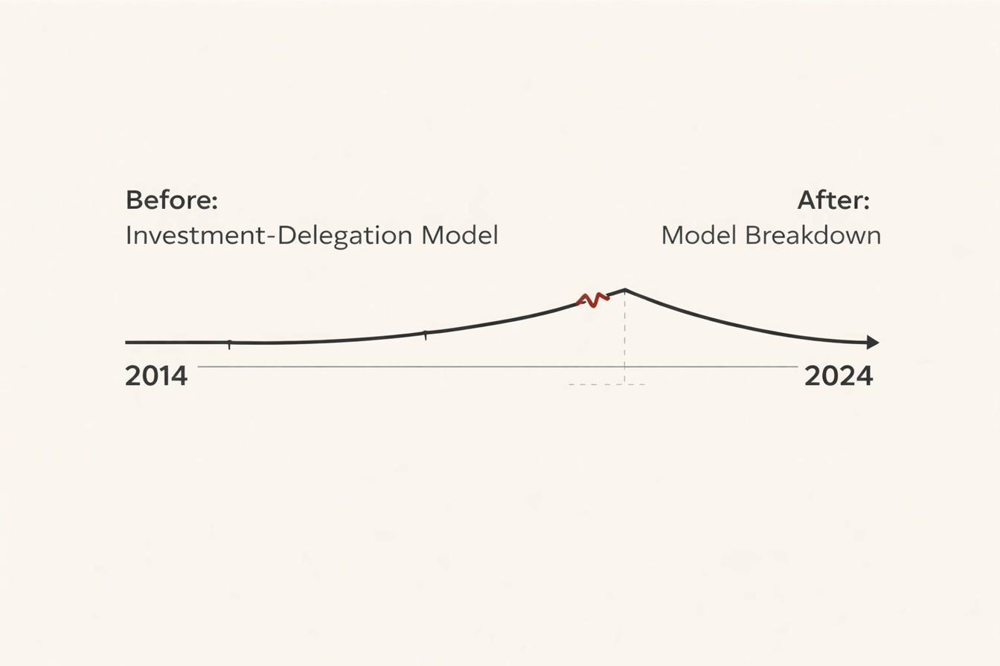
If you have ever worked in or around a telecom operator, you have probably heard some version of this sentence: "VAS are just extra services." That perception is widespread — and it is precisely why VAS have been so poorly understood for years.
What VAS really were. Before app stores. Before widespread card payments. Before subscriptions became the default. VAS enabled telecom operators to monetise non-banked users, expand ARPU beyond connectivity, distribute digital products at massive scale, and turn trust and billing into a platform. In many emerging markets, VAS were the first large-scale digital economy people ever interacted with. They were not elegant. They were effective.
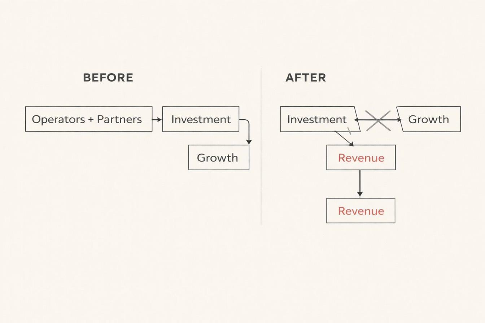
The Investment-Delegation Model: Operators didn't build content; they delegated it to aggregators and studios. The operator provided the infrastructure (billing, distribution, trust), the aggregator managed content and customer experience. This worked because margins were high enough to split three ways: content creator, aggregator, operator.
What broke it. The model worked until it didn't. Margin compression from data bundles, rise of app stores as the default distribution, regulatory pressure on auto-renewals, and WhatsApp/YouTube replacing carrier portals all contributed to its decline.
The Bottom Line. VAS is not about "premium content" — it's about distribution infrastructure. The question isn't "what content should we offer" but "how do we become indispensable pipes for digital services in markets where traditional payment rails are weak?" That's the question that matters in 2026.
Most investment theses on African and emerging markets are built on data that was collected from the outside. Unit economics modelled on Western benchmarks. Market entry assumptions borrowed from Southeast Asia. Infrastructure risks footnoted but not priced in.
After 12 years scaling digital products across Africa — fintech, SaaS, e-commerce, telecom — I know where those models break. Not in theory. In the field, at the P&L level, in the room where the deal either works or doesn't.
I work with a small number of VCs, boards, and scale-ups who need that operator layer — the one that sits between the deck and the reality.
You are looking at a deal in Africa or an emerging market. The numbers look right. I tell you whether the operational assumptions behind those numbers are realistic — CAC in a trust-gap market, last-mile logistics costs, regulatory timelines, infrastructure dependencies. The things that don't show up until after close.
You are a platform that works in Europe and wants to scale into Africa. I have launched 15+ digital products across 6 African markets. I know the difference between a market that looks attractive on paper and one that actually has the payment infrastructure, distribution network, and regulatory environment to support your unit economics.
Your portfolio company needs senior operator capability but not a full-time hire. I embed at the growth and marketing layer — owning P&L, building acquisition infrastructure, fixing the unit economics that are preventing scale. Engagements are focused, time-bounded, and output-oriented.
Board-level or leadership team conversations on digital scale-up, platform economics, and emerging market expansion strategy. Particularly useful when the room has strong financial expertise but limited on-ground operator experience in the markets you are entering.
If one of those scenarios sounds like a conversation worth having, the best first step is a direct email. No deck required.